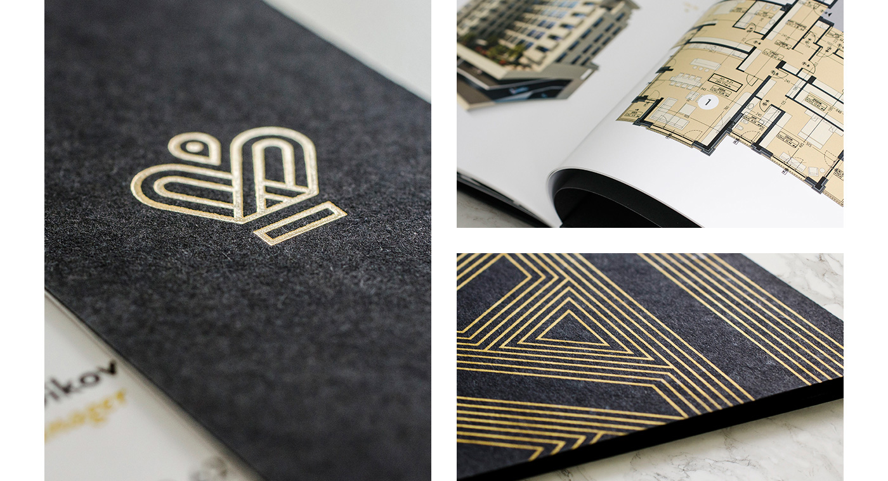

Stefan Vladimirov
Chief Creative at Swipes. Loves order and beauty. Always striving to achieve the
balance between function
and aesthetics.

Designer, front ender, writer
Short intro
I’m Luis, or @disco_lu in most places, a designer, cook, sarcastic person and devil’s advocate
What do you do for a living?
Making visual design. My current focus is crafting logo design and brand identities for various businesses large and small.
When did you find your passion for design?
I’ve always been interested creativity as an expression. I would get frustrated as a child when I couldn’t draw and my (twin) brother was better at it than I. When we were finally allowed a home computer, aged 12, I used to take it apart and put it back together for fun – I’m not sure why this was fun. At school, I was always the go-to student for tech related problems in class. I’m assuming this wasn’t because I was the best, but because I showed the most interest in helping. It wasn’t until university that, given the UK’s very loose definition of ‘education’, did I find myself in the deep end of design and development and through will power came out alive. It was in these then that I found out I was pretty good at thinking creatively to solve design problems, and my career began before I had finished my degree.
How long have you been doing your craft?
I started my degree in 2008, but professionally I’ve been a designer since 2011.
Describe the beginning of your day
I usually wake up between 7-7.30am, head straight into the shower (after a big drink of water), then do some stretches whilst watching the news. I’ll either have some light breakfast at home, or some cereal at the office – desperately looking for some healthy meat and dairy-free breakfast options if anyone has suggestions. The team at work go for coffee at 9.30, so we’ll usually catch up about the previous and coming day – a light stand up, if you will. Work kicks off around 10am ish, and I get straight into it. Headphones on.
What’s your workspace?
What’s your source of inspiration?
I don’t tend to follow trends, as I usually find that by chasing something current you’ll be out of date by the time it’s finished. That said though, it’s difficult not to be influenced by what everyone else is doing. Remember when drop shadows were frowned upon? I generally try to keep my designs simple, so I’ll take inspiration from those that don’t over-design, which is usually the big players like Apple and Google. For inspiration in an artistic sense, I’m always looking out for what Intercom and Mailchimp are doing. I subscribe to a few product newsletters (Product Hunt, Betalist, Launchlister), and I click through to a lot of the products showcased on these. This keeps me abreast of product design and industry highlights.
What works are you most proud of?
I’ve chosen OneStepBooking.com not for its demonstration of my artistic flair, but
because it was a project completed from the ground up. I was approached by the team behind a previous
flight website that I’d done odd design work for with the opportunity to launch a brand new global
budget flight booking website. I obviously jumped at the chance, and set out to recruit a (trusted)
back end developer to help me bring the project to life. I managed the client, designed and build the
front end, and branded this new concept site. It showed me that I could have a future in running my own
practice, which I may intend to do in the future. It also highlights the importance of building
relationships with your clients, as they will come back to you in the future if you can be trusted, no
matter how small the job.

What are the tools you use in your day to day life?
Do you follow any set of principles for your work?
What advice would you give to people that start out with logo design
Try to be open to everything. Experiment as much as you can. Great work comes after dedication and practice.
What’s your favourite movie?
Donnie Darko
What’s your favourite book?
White Noise - Don Delillo
What advice would you give to people that start out with design?
Read as much as you can. Subscribe to newsletters, follow blogs, and read tutorials. Reading is your key to growth. Second to this, and something I didn’t learn for years, network! Get your face out there – go to events, start a Twitter account and talk to people, email your favourite designers and ask for help on a project. Talking to your peers and debating over the field is a great way to learn important skills like confidence and talking to a crowd. Lastly, learn the basics. Teach yourself how to use a grid properly, memorise typography hierarchies and measure everything you do. The less random decisions you make about spacing and alignment, the more professional your work will be.
Have you ever thought of empowering your creative community in any way, shape or form?
Definitely. I’ve actively pursued projects that enable me to do this. I launched a quick side project for junior designers to find jobs last year (juniordesignjobs.com), and I have goals with my digital publication 8px (medium.com/8px-mag) to provide a platform designers that want to write about their lives. Unfortunately, designers are always forced to write about tools or processes, yet we’re humans too, and that’s what I’d like to showcase.
In addition, I like to help out at events and have been involved with two in Sydney in the past year. The Design Feedback Jam is a small session (under 10 people), where you’re encouraged to pitch WIP projects to receive constructive feedback from your peers. It’s rare in most work places that you have formalised feedback sessions, especially amongst other designers, so it’s really useful. In fact, we gave feedback to someone on her resume and, after implementing our suggestions, she was offered a job!
The second event I’ve helped out on is Sydney Designers. This monthly event is a more traditional speaker / audience setup, where 2 people will talk about their specialty to an audience of 100+. We’ve had speakers from UX writers, to illustrators, to VR designers meaning that it’s also an opportunity for us all to learn about new disciplines.
Meet Alex on the Social Media
DribbbleThank you for the oppurtunity, Alex. I'm really happy that I had the chance to interview you.